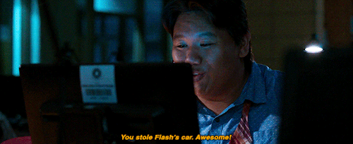

2025 -- ???
DEUST Webmaster & métiers de l’Internet
De nombreuses manipulations et réalisations concernant le métier directement. Réalisation de deux sites web (un à l’aide de Wix le second en HTML)
Étudiante résidant en France métropolitaine, titulaire d’un baccalauréat STMG avec mention, je suis actuellement en DEUST Webmaster et Métiers de l’Internet (1ʳᵉ année) en formation initiale. En parallèle de mes études, je développe une activité freelance en programmation, avec une spécialisation dans le jeu vidéo.
Passionnée par la cinématographie, la littérature, l’informatique et le jeu vidéo, ces domaines occupent une place centrale dans mon parcours et mon investissement personnel. Cette passion m’a naturellement conduite à m’orienter vers une formation en lien direct avec le développement numérique et créatif.

Future Webmaster créative et motivée, je conçois des sites web esthétiques et fonctionnels, tout en respectant les délais. Je mets un point d'honneur à améliorer l’expérience utilisateur grâce à un design intuitif et innovant. Mes compétences sont les suivantes : créativité, organisation, motivation, design, gestion du temps & détermination.
De nombreuses manipulations et réalisations concernant le métier directement. Réalisation de deux sites web (un à l’aide de Wix le second en HTML)
Spécialités management, économie, droit et marketing. Obtenu avec mention bien et sans contrôle continu.
Mention bien